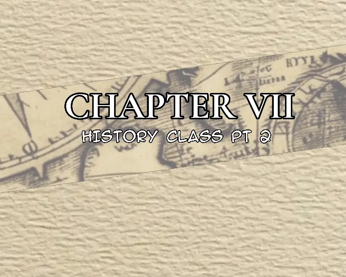
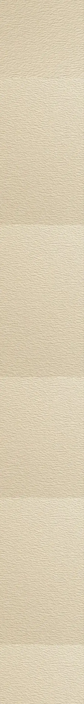

Lucas was walking outside the university gates, making his usual trip toward the Oakwood Public Library.
The afternoon was relatively quiet. Students moved in and out of the university grounds in small groups, some talking among themselves, others walking with their eyes glued to their phones. Lucas kept his hands in his pockets as he followed the familiar road toward the library.
A little girl caught his attention.
She was walking a short distance behind him, skipping along the pavement while quietly singing to herself.
Lucas glanced over his shoulder.
"Elsa," he called.
The little girl stopped mid-skip and looked back at him.
Lucas turned around and walked toward her.
"Bella isn't in today," he said. "She's at home. Her teacher called in sick."
Elsa stared at him for a moment.
Lucas pointed vaguely back toward the direction of the university.
"You should probably go home."
Elsa nodded.
"Thanks. Byeee."
She immediately turned around and continued skipping down the pavement as though the conversation had never happened.
Lucas watched her for a second before turning around and continuing toward the library.
The Oakwood Public Library was already busy.
Students were constantly coming through the entrance, some carrying books they were returning, others searching for something to read or study. A few sat near the windows with their laptops open, while others wandered between the shelves looking for particular titles.
Lucas pushed through the entrance.
The familiar smell of old books greeted him.
He looked toward the front desk and spotted Valerie.
She was already busy helping a few students, moving between them as they asked questions about books and library cards.
Lucas considered saying hello, but Valerie didn't even notice him.
He decided not to interrupt.
Instead, he headed toward the shelves and got straight to work.
His job was simple.
Find the books that had been returned, figure out where they belonged, and put them back.
Lucas moved slowly along the rows, checking the labels on each book before sliding it into its proper place.
It wasn't exactly exciting work.
But that was probably the point.
Nobody expected anything exciting to happen in a library.
As Lucas was returning a few books to one of the shelves, he heard a group of girls talking nearby.
They were standing on the same row he was working on, completely absorbed in their conversation.
"Did you hear?" one of them asked. "The government made an app that every business can use."
Her friend looked interested.
"What kind of app?"
"It's basically for jobs. Businesses can post information whenever they're hiring, and people can apply through it."
Her friend's eyes widened.
"Seriously? That's actually great."
"Yeah. I guess we won't have to struggle finding jobs as much anymore."
"Finally," another girl said. "At least they're doing something for the community."
The girls continued talking as they walked farther down the aisle.
Lucas barely paid attention.
He was more interested in the books in front of him.
He reached for another book and pulled it from the shelf.
Then he stopped.
Lucas stared at the cover.
The title was written in large letters:
HOW TO MAKE MY BOYFRIEND OBSESSED WITH ME
He slowly looked at the book.
Then he looked down the aisle where the girls had disappeared.
His expression remained completely blank.
Lucas slid the book back onto the shelf.
He paused.
Then, for reasons even he couldn't explain, he pulled it out again and looked at the cover one more time.
He put it back.
"Interesting," he muttered.
And continued shelving books.
Damon was sitting quietly on one of the couches, staring absentmindedly toward the bookshelf across the apartment.
The clock on the wall was ticking.
Tick.
Tick.
Tick.
For a while, Damon simply listened to it.
Time seemed to be moving painfully slowly, each second passing close enough for him to notice it. Eventually, however, another sound interrupted the ticking.
His stomach growled.
Damon looked down.
"Hm."
He stood up from the couch and walked toward the kitchen. Opening the refrigerator, he looked inside, expecting to find something—anything—that could pass as food.
There was nothing.
Except milk.
Damon stared at the bottles sitting inside the refrigerator.
He remained there for a moment.
"Hm."

He slowly closed the refrigerator door.
"That explains a lot."
He grabbed his things, left the apartment, locked the door behind him, and headed outside.
It was already a busy morning.
Students were scattered across the campus, most of them heading toward their morning classes. The university was noticeably livelier at this time of day, with students rushing across the walkways, talking in groups, carrying books, and occasionally running when they realized they were late.
Afternoon classes were usually preferred by students who liked sleeping in, but Damon had never seemed particularly concerned about either.
He walked through the campus gates and followed the same route Lucas had taken earlier, eventually making his way toward Oakwood Public Library.
By the time Damon arrived, the library had become considerably quieter.
There were still students inside, but most were scattered throughout the building, sitting at tables or browsing the shelves.
Damon looked around.
Then he spotted Valerie.
She was sitting in her usual place behind the front desk, listening to music through her headphones while reading a book. She appeared completely absorbed in it.
Damon walked over.
"Hey."
Valerie looked up at him.
She stared for a second before returning her attention to her book.
Damon waited.
A few seconds passed.
Valerie eventually looked at him again.
This time, she squinted slightly.
She studied his face as though trying to pull a memory from somewhere in her head.
Then she took one of her headphones off.
"I think I know you from somewhere."
Damon shrugged.
"Maybe from a party."
Valerie continued staring at him.
"Yeah... maybe."
She didn't sound entirely convinced.
Damon glanced around the library.
"Have you seen Lucas here?"
"Yeah. He's somewhere around here."
Valerie looked toward the shelves.
"I'm not sure where, though. He wanders around a lot."
"Thanks."
Damon turned away and began walking between the shelves, looking for Lucas.
Valerie watched him for a moment.
Then she put her headphone back on, returned her attention to her book, and continued reading as though the conversation had never happened.
Lucas was standing in the romance section of the library, staring blankly at the shelves.
He had already finished returning the books to their proper places, but instead of going back to Valerie or finding something else to do, he had simply wandered over to another section.
His mind had drifted elsewhere.
He wondered if Bella was okay.
He wondered if she was even still alive.
It was a strange thought to have about someone he'd barely spoken to, but something about her had been bothering him since the last time he'd seen her.
Lucas stared at the rows of romance novels without actually reading any of their titles.
"Looking for a romance book?"
Lucas turned his head.
Damon was standing beside him.
"No."
Lucas looked back at the shelves.
"And what are you looking for?"
"You."
Lucas turned toward him again.
"Why me? I'm not a girl."
Damon stared at him for a second.
"Because I want you to help me find a door."
Lucas's expression barely changed.
"I can't help you. I'm currently occupied."
Damon looked around.
Then he glanced at the empty book trolley beside Lucas.
It contained absolutely nothing.
He looked back at Lucas.
"Occupied?"
"Yes."
"You're standing next to an empty trolley."
"I know."
"So what exactly are you occupied with?"
"Thinking."
Damon sighed.
"Fine. Then think about helping me find a door."
Lucas finally looked at him properly.
"What door?"
"I don't know."
Lucas stared at him.
"You want me to help you find a door you don't know anything about?"
"That's the idea."
Lucas didn't respond.
Instead, he studied Damon for a moment.
"How do you know all these people's information?"
Damon frowned.
"What?"
"You know their names."
"I don't."
"You do."
"I don't."
"You knew my name."
Damon looked at him.
Lucas continued.
"You know everyone's names. You know things about people."
"I don't know everyone."
"You knew mine."
"Lucky guess."
Lucas raised an eyebrow.
"You're a terrible liar."
Damon shrugged.
"Thanks."
Lucas sighed.
For a moment, neither of them said anything.
Then Damon turned away from the shelves.
"Let's explore the university together."
Lucas looked at him.
"Why?"
"Maybe we'll find the door."
Lucas thought about it for a few seconds.
"Why not?"
The two of them left the section together.
As they walked through the library, they passed Valerie at the front desk.
She looked up.
Her eyes immediately went to Damon.
For a moment, she stared at him with the same strange expression she'd had earlier, as though she were trying to remember where she had seen him before.
Lucas noticed.
He glanced between Valerie and Damon.
"Do you two know each other?"
"No," Damon said immediately.
Valerie continued watching them.
Lucas narrowed his eyes slightly.
"It seems like it."
"Maybe she just thinks I'm someone she met before."
Lucas kept walking beside him.
"That's what people who know each other often say when they've got some weird shit going on."
Damon looked at him.
"That's fucked up."
Lucas shrugged.
"I'm just saying."
They continued toward the exit.
Neither of them noticed Valerie still watching Damon from behind the desk.


Bella continued staring at Becca.
"Never like the rest of us?"
Becca nodded.
"Raker understood the curse differently."
"How?"
"He believed the curse wasn't simply something that killed people."
Bella frowned.
"Then what is it?"
Becca looked at the candles surrounding them.
"It is a rule."
"A rule?"
"Yes. A rule that has existed longer than anyone in this family remembers."
Bella leaned back in her chair.
"And the spirit follows the rule?"
"It enforces it."
Bella looked at the flames.
"So the spirit isn't the curse?"
"No."
"Then what's the curse?"
Becca was quiet for a moment.
"The curse is the bloodline."
Bella's expression changed.
"The Beaumont bloodline?"
"Yes."
Becca folded her hands together.
"The spirit is only one part of it. The family, the bloodline, the names, the traditions, the marriages... all of it is connected."
Bella looked confused.
"I don't understand."
"You don't need to understand all of it yet."
"You keep saying that."
"And you're going to keep asking questions."
Bella smiled slightly.
"Probably."
Becca smiled back.
"The Beaumont family has always been expected to continue. Every generation must produce another generation. The name must continue. The blood must continue."
"And if it doesn't?"
"The curse becomes stronger."
Bella's smile disappeared.
"What does that mean?"
"It means the family begins to lose control over the things that protect it."
"What protects us?"
Becca looked around the basement.
"Tradition."
Bella looked at the candles.
"This?"
"Partly."
Becca pointed toward the floor.
"The ceremonies. The names. The way marriages are performed. The way the dead are buried. The things we are allowed to do and the things we aren't."
Bella stared at her.
"So all of this is keeping the curse under control?"
"Not exactly."
Becca shook her head.
"It keeps the family within the rules."
Bella frowned.
"And if someone breaks the rules?"
"Then the curse responds."
Bella was silent.
"By killing them?"
"Sometimes."
"Like the outsiders?"
"Yes."
Bella looked down at her hands.
"So if someone from outside the family marries a Beaumont without doing the traditional ceremony, the spirit kills them?"
"That is one of the consequences."
"And if they do the ceremony?"
"They become part of the family."
Bella thought about her father.
"That's what happened to Dad."
"Yes."
"So the ceremony doesn't remove the curse."
"No."
"It makes him part of it."
Becca nodded.
"Exactly."
Bella looked uncomfortable.
"That doesn't sound better."
"It isn't."
"Then why would anyone do it?"
"Because sometimes people would rather become part of the curse than lose the person they love."
Bella became quiet.
Becca watched her carefully.
"That is why love has always been complicated in this family."
Bella looked up.
"Because you can't just love whoever you want."
"You can."
Bella raised an eyebrow.
"Then what's the problem?"
"You can love whoever you want."
Becca paused.
"But the curse doesn't care who you love."
Bella slowly understood.
"So it doesn't punish you for loving someone."
"No."
"It punishes the person you love."
"Yes."
Bella looked away.
"That is cruel."
"It is."
"And there's nothing we can do about it?"
Becca didn't answer immediately.
"There are ways to live around it."
"Around it?"
"Not defeat it."
Bella looked back at her.
"You've never defeated it?"
"No one in the family has."
"Then how has the family survived for so long?"
"By obeying."
Bella stared at her.
"That simple?"
"No."
Becca leaned forward.
"Obedience isn't always simple."
She glanced at the candles.
"There have been people who refused. People who tried to break away. People who thought they could live without the family."
"And what happened?"
"Some disappeared."
Bella's face became serious.
"Others died."
"The outsiders?"
"Some."
Becca paused.
"And some were Beaumonts."
Bella's eyes widened.
"So the curse can kill its own family?"
"If the rules are broken badly enough."
Bella looked toward the basement door.
"Then why does the family keep following it?"
"Because every generation believes it can be the one that finally understands it."
Bella gave a quiet laugh.
"That doesn't sound very hopeful."
"It isn't."
There was silence between them.
Bella looked at the candles again.
"What about the names?"
Becca nodded.
"The names are part of the tradition."
"Because they all start with B?"
"Yes."
"But why B?"
Becca smiled faintly.
"That's one of the oldest parts of the tradition."
"So you don't know?"
"I know what I was taught."
"That isn't the same thing."
"No."
Becca smiled.
"You're learning quickly."
Bella crossed her arms.
"So what happens if someone changes their name?"
"It depends."
"On what?"
"Whether they were born into the family or married into it."
Bella thought for a moment.
"And Raker?"
Becca's expression changed.
"Raker was born into the family."
"But his name didn't start with B."
"No."
"And he refused to change it."
"Yes."
Bella leaned forward.
"Then why didn't the curse kill him?"
Becca stared at her.
"That is what makes Raker different."
"Different how?"
"He wasn't simply refusing a name."
Bella waited.
"He was refusing the role the family had given him."
Bella's eyes narrowed.
"What role?"
"The role of continuing what came before him."
Bella remained silent.
Becca continued.
"Raker believed that the family had mistaken tradition for obedience. He believed that just because something had been done for generations didn't mean it was right."
Bella slowly nodded.
"So he challenged it."
"He did more than challenge it."
"What did he do?"
Becca looked toward the candles.
"He tried to understand where the curse came from."
Bella's expression changed.
"And did he find out?"
Becca didn't answer.
"Becca?"
"He found something."
"What?"
"That is where Raker's story truly begins."
Bella waited for more.
Nothing came.
"So you're not going to tell me?"
"Not today."
Bella sighed.
"You really enjoy doing that."
Becca laughed softly.
"You'll understand why eventually."
Bella looked around the basement.
"One more question."
"What?"
"If the curse is about the family continuing..."
She hesitated.
"Why does it care about outsiders?"
Becca's smile disappeared.
"Because outsiders are not supposed to carry the bloodline."
Bella frowned.
"But Dad does."
"Your father became part of the family."
"Because of the ceremony."
"Yes."
"And if he hadn't?"
Becca looked directly at her.
"Then loving your mother would have eventually put his life in danger."
Bella was silent.
"And that's why the family has those rules?"
"Those rules exist because the family learned what happens without them."
Bella looked down.
"How many people have died?"
Becca didn't answer.
Bella looked up again.
"How many?"
"Enough that nobody in this family should ever treat the curse as a story."
The room became quiet.
The flames flickered.
Bella stared at the candles.
"So all those people..."
Becca nodded.

"They are part of the reason we are still here."
Bella looked confused.
"How?"
Becca slowly stood from her chair.
"Because the dead are not forgotten."
She walked toward the far wall.
Bella followed her with her eyes.
"And every generation inherits what the previous one left behind."
Bella looked toward the candles.
"The curse?"
"The curse."
Becca turned back toward her.
"The rules."
"The blood."
"The name."
"And the consequences."
Bella swallowed.
"And one day..."
Becca looked at her.
"You will inherit them too."
Bella said nothing.
For the first time, the basement felt much colder than it had before.
She looked at the candles surrounding them.
Then at Becca.
Then toward the closed door.
"I'm starting to understand why Grandma said today was important."
Becca nodded.
"It is."
Bella looked at her.
"Why?"
Becca smiled faintly.
"Because you are old enough to finally know what your family has been carrying."
Bella sat quietly.
She didn't feel like she had learned everything.
Far from it.
But for the first time, the Beaumont curse no longer sounded like an old family story.
It sounded like something alive.
Something that had been waiting for her.

As they left the library, Lucas and Damon stepped back into the university yard.
The atmosphere was completely different from the quietness of the library.
The campus was loud.
Students were everywhere.
Some were sitting in the grass in small groups, talking and laughing. Others were walking between buildings, heading toward their next classes, while a few were coming through the gates from outside.
It was the kind of ordinary university afternoon where nothing seemed particularly important.
Damon walked beside Lucas without saying much.
After a while, Damon looked up.
The sky stretched endlessly above the university.
It was beautiful.
The blue wasn't as bright as it usually was. There were pale clouds scattered across it, giving the sky a strange, almost empty appearance.
Damon kept looking upward as he walked.
His eyes became unfocused.
For a moment, the noise of the students around him seemed to disappear.
He was staring into the sky as though there was something hidden inside it.
Lucas noticed but didn't say anything.
Damon's thoughts drifted.
He didn't even realize he'd started speaking until the words had already left his mouth.
"I miss Bella."
Lucas looked at him.
Damon didn't seem to notice.
He continued walking, eventually lowering his head and taking a long, slow breath.
There was something about the way he'd said it that made Lucas hesitate.
It hadn't sounded like a casual statement.
It sounded like someone remembering something they couldn't get back.
Before Lucas could ask anything, a voice came from behind them.
"Hey, Lucas."
Lucas turned around.
Gwen was walking toward them.
"Oh, Gwen."
Lucas gave her a small smile.
"What a small world we live in."
Gwen raised an eyebrow.
"I doubt that."
Lucas chuckled quietly.
"Fair enough."
Gwen caught up with them.
"How's your day going?"
"Bullshit."
Lucas blinked.
"That bad?"
"People are saying shit about me."
Lucas looked ahead.
"People are shit."
Gwen nodded.
"As stinky as they are."
Lucas actually laughed a little.
"Exactly."
They continued walking through the university yard together.
"They always have something to say," Gwen continued. "You could literally do nothing and somehow people would still find a reason to talk about you."
Lucas's smile faded slightly.
"Yeah."
He shoved his hands into his pockets.
"They always do."
Gwen glanced at him.
Lucas was quieter than usual.
She didn't point it out.
Instead, she continued.
"That's why you should just do whatever you want. Because at the end of the day, they're still going to have something to say about you anyway."
Lucas looked at her.
For a second, he didn't answer.
Then he nodded.
"Yeah."
They kept walking until they eventually reached a large tree away from the busiest part of the university yard.
Gwen stopped beneath it.
"Let's sit here."
Lucas followed her and sat down against the tree.
The sounds of the university continued around them, but they felt distant beneath the shade.
Lucas leaned his head back against the tree and looked toward the sky again.
"Yeah," he said quietly. "That's definitely true."
He glanced at Gwen.
"Look at you being wise."
Gwen smiled proudly.
"You can call me Sensei."
Lucas let out a quiet giggle.
"Sensei Gwen."
"Exactly."
She nodded seriously.
"I accept my new title."
Lucas smiled again, but it didn't last long.
His eyes drifted back toward the sky.
For a few seconds, he said nothing.
Gwen noticed.
"You okay?"
Lucas didn't look at her.
"Yeah."
A pause.
"Just tired."
Gwen studied him for a moment but didn't push him.
"Then sit here and be tired."
Lucas gave a small smile.
"Sounds good."
And for once, he didn't feel the need to say anything else.
"I thought you were the one calling me that," said Lucas.
Gwen looked at him.
"This is where the tables flip."
"Hmm... yeah, maybe not."
Lucas looked at her with a slight grin.
"Which one do you think you'd prefer being—submissive or dominant?"
Gwen thought about it for a moment.
"Sometimes I might feel like being both, you know?"
She gave him a smirk.
Lucas stared at her.
"Squirrels."
Gwen frowned.
"What?"
"Squirrels."
"Okay... and you're the beaver."
"I'm a lion."
"You're a human, Luc."
"I know."
Lucas smiled.
"I just love having a colorful mind."
His smile faded slightly.
"Because it gets dark in here."
Gwen looked at him for a moment.
"Hmm."
She tilted her head.
"You're giving off the 'it's lonely out here' vibes."
Lucas glanced at her.
"But which one are you often into?"
"Into what?"
"The one you were talking about."
Gwen shrugged.
"Mostly, I'm just following around when I'm lost."
Lucas raised an eyebrow.
"I oddly feel like that has a deeper meaning than it seems."
Gwen looked down at the grass.
"Yes, it does."
She paused.
"I don't really know what I'm doing with my life."
Lucas didn't immediately respond.
The joking atmosphere between them disappeared for a moment.
He looked at Gwen.
Then at the grass beneath them.
"Yeah."
He understood that feeling more than he wanted to admit.
Before he could say anything else, footsteps approached.
Damon appeared in front of them.
"I zoned out," he said. "Let's go, dude."
Lucas looked up at him.
Then he looked at Gwen.
Gwen looked at him.
Then back at Damon.
Damon glanced between the two of them.
"What?"
He paused.
"Did I just disturb your boyfriend-and-girlfriend moment?"
"No, you didn't," Lucas said, getting to his feet.
Gwen laughed.
Lucas dusted some grass from his clothes.
"Later, Gwen."
"Bye."
Lucas followed Damon away from the tree.
For a few seconds, neither of them said anything.
Then Damon looked at Lucas.
"I noticed your hair is all right at the back."
Lucas touched the back of his hair.
"Yeah, it is."
Damon nodded.
"Good."
They continued walking.
As they were about to enter the building through the sixth gate, Lucas and Damon noticed something strange.
A crowd had gathered outside.
Students who had been walking across the university yard had stopped in their tracks. Some were pointing toward the building, while others were looking up at the roof.
Lucas slowed down.
"What the hell?"
Damon looked around.
"Why is everyone looking up?"
They turned toward the building.
A boy was standing on the edge of the roof.
He was dangerously close to the edge, looking down at the crowd below.
For a moment, nobody seemed to know what to do.
Some students were already taking pictures with their phones.
Others were talking among themselves, trying to figure out whether someone had called campus security.
"Someone should call the guards," one student said.
"They're probably already coming."
"Is he actually going to jump?"
The crowd continued growing.
Damon stared upward.
"Damn. He's about to jump."
Lucas looked at the boy on the roof.
He didn't say anything.
The boy stood completely still.
The entire university seemed to have paused around him.
Then Lucas suddenly turned away.
"I think I need to sleep."
Damon looked at him.
"What?"
Damon started walking toward the building.
"You were literally going to help me find the door."
"I promise I'll help you tomorrow." said Lucas
Lucas started walking away.
"Today I can't."
Lucas watched him disappear into the crowd.
Then he looked back toward the roof.
The boy was still standing there.
A few seconds passed.
Then he stepped forward.
The crowd went silent.
The boy disappeared from the edge.
A scream came from somewhere below.
Several students recoiled while others simply stood there staring.
Some looked horrified.
Others looked strangely fascinated.
A few immediately started talking about what had just happened.
Lucas remained still for a moment.
He didn't know what he was supposed to feel.
Eventually, he turned away.
He walked toward his sister's apartment, entered his room, closed the door behind him, and lay down on his bed.
Within minutes, he was asleep.
Meanwhile, Damon continued wandering around the university.
He walked through the corridors without any particular destination, occasionally stopping to look at the different buildings and doors.

The university was still buzzing around him.
But Damon seemed completely disconnected from it.
As though he was searching for something he couldn't even explain.

.png)
.png)
.png)
.png)